Reject an image by adding its slug to public/charades/charades-actions/reject.txt (append ! to keep it word-only), then re-run node scripts/genimages.mjs.
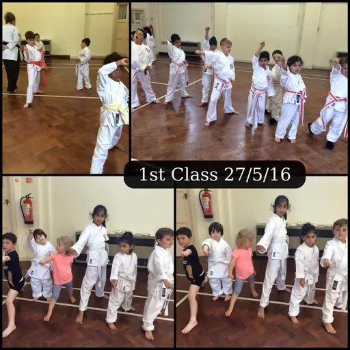
Karate karate CC BY-SA 4.0 · Blackpantherkarate · sourceKayaking kayaking CC BY-SA 4.0 · The Persian Doctor · source
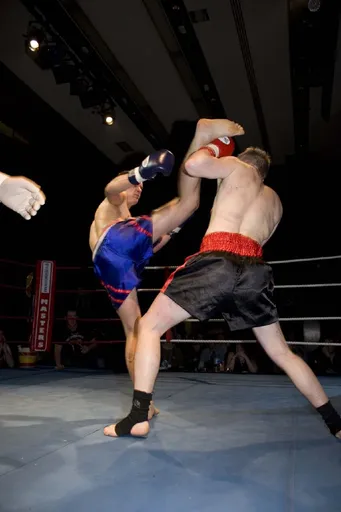
Kickboxing kickboxing CC BY-SA 2.0 · Loura Conerney from Manchester, England · source
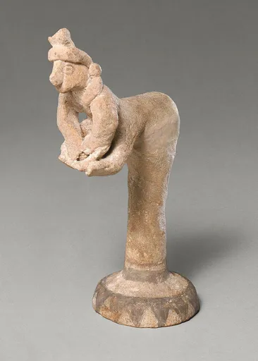
Kneading dough kneading-dough CC0 · This file was donated to Wikimedia Commons as part of a project by the Metropolitan Museum of Art. See the Image and Data Resources Open Access Policy · source
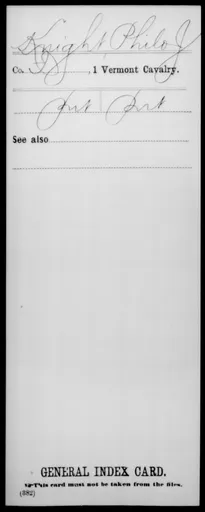
Knight knight Public domain · War Department. The Adjutant General's Office. 3/4/1907-9/18/1947 · source
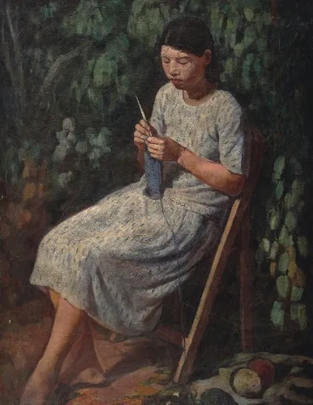
Knitting knitting CC BY-SA 4.0 · Li Mei-shu · source
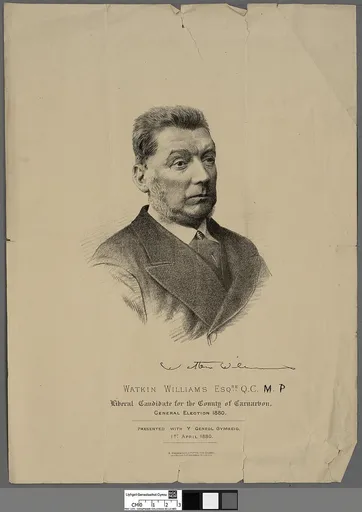
Lawyer lawyer Public domain · A. MacGregor · source
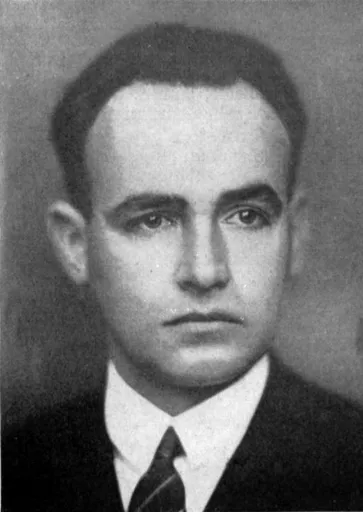
Librarian librarian Public domain · Unknown authorUnknown author · source
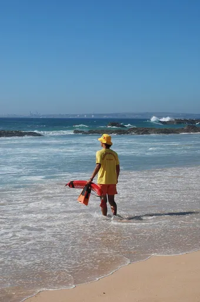
Lifeguard lifeguard CC BY-SA 3.0 · Alvesgaspar · source
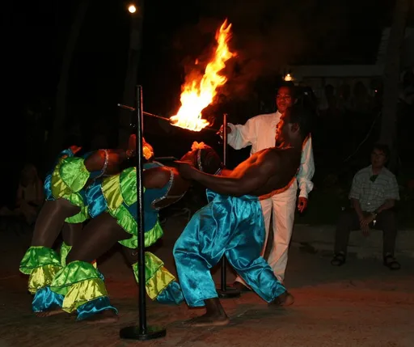
Limbo dancing limbo-dancing CC BY 2.0 · Screaming Bertha · source
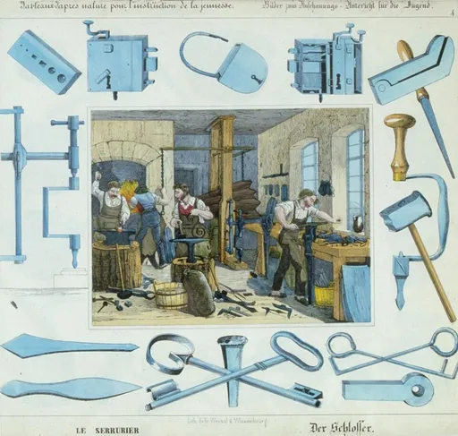
Locksmith locksmith Public domain · Jean Frédéric Wentzel (1807-1869). · source
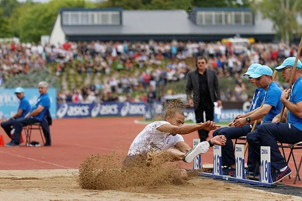
Long jump long-jump CC BY-SA 4.0 · Pierre-Yves Beaudouin · source
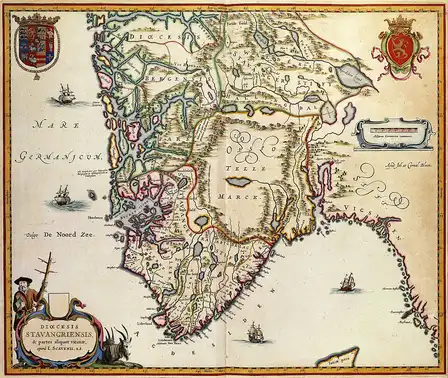
Lumberjack lumberjack Public domain · Joan Blaeu · source
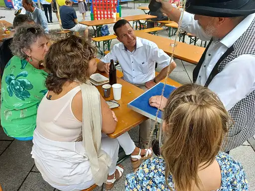
Magician magician CC BY-SA 4.0 · Asurnipal · sourceMailman mailman CC BY-SA 4.0 · Beyond My Ken · source
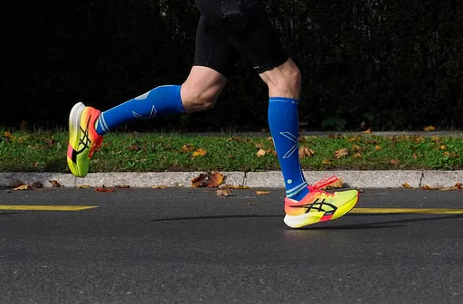
Marathon marathon CC BY-SA 4.0 · Petar Milošević · source
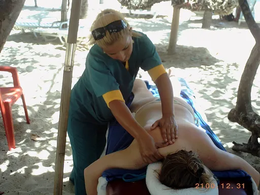
Massage therapist massage-therapist CC BY 3.0 · el ancora service · source